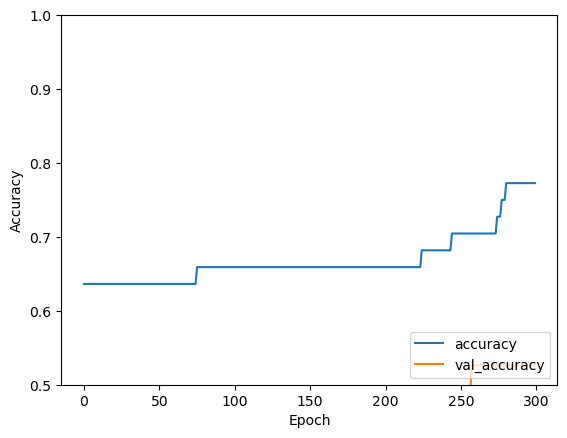
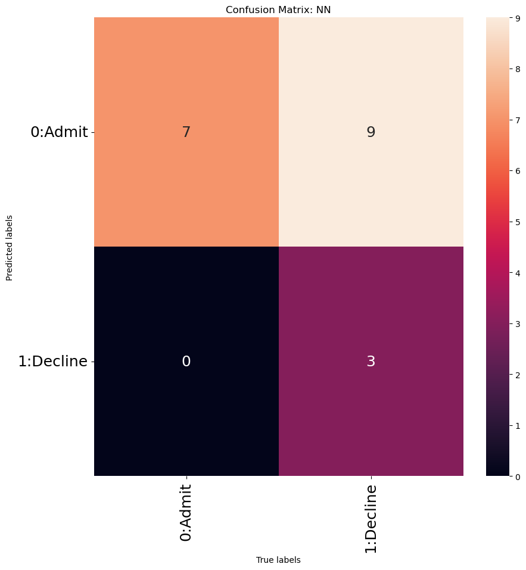

# libraries
import tensorflow as tf
from tensorflow import keras
from tensorflow.keras import layers
from sklearn.model_selection import train_test_split
import tensorflow.keras
#from tensorflow.keras.datasets import mnist
from tensorflow.keras.models import Sequential
from tensorflow.keras.layers import LSTM, Dense, Dropout, LSTM
from tensorflow.keras.optimizers import Adam
import matplotlib.pyplot as plt
from tensorflow.keras import layers
import numpy as np
import pandas as pdTF/Keras with Record dataset
Gates’ full, raw (unedited) code Reference: Professor Ami Gates, Dept. Applied Math, Data Science, University of Colorado
This code uses a simple record dataset with numeric data.
- The dataset has 3 columns of data (3 features)
- The dataset has labels of 0 and 1.
There is a link to the data below.
This code uses Keras to build a simple NN to predict the label (called “Decision”) for this dataset.
Data
Link to dataset
https://drive.google.com/file/d/1JjkJ4q0MMGJP8jht2ZI9qDEvV5Jjfu0r/view?usp=drive_link
## Path to dataset on my computer
## YOU will update this path for YOUR computer
filepath="StudentSummerProgramData_Numeric_2NumLabeled_3Cols.csv"
DF=pd.read_csv(filepath)
print(DF.head()) Decision GPA WorkExp TestScore
0 0 3.90 6.7 962
1 0 3.80 1.4 969
2 0 3.80 2.3 970
3 0 3.60 0.9 969
4 0 3.92 1.2 969Prepare the data
This means you need to:
- Normalize the data - but NOT the label!
- Separate the data into a Training set and a Testing set
- Remove and retain the labels for both the Training and Testing datasets.
Step 1 - Use min-max to normalize the data (but NOT the label!)
What are the column names? What column is the label?
print(DF.columns)Index(['Decision', 'GPA', 'WorkExp', 'TestScore'], dtype='object')“Decision” is the label of this dataset.
for col in DF.columns:
#print(col)
if col != "Decision":
DF[col]=(DF[col]-DF[col].min())/(DF[col].max()-DF[col].min())
#print(DF[col])
print(DF.head()) Decision GPA WorkExp TestScore
0 0 0.981132 0.728261 0.963470
1 0 0.918239 0.152174 0.995434
2 0 0.918239 0.250000 1.000000
3 0 0.792453 0.097826 0.995434
4 0 0.993711 0.130435 0.995434Split DF into Training and Testing sets
# Random sampling *without replacement*
TrainDF, TestDF = train_test_split(DF, test_size=0.3)
print(TrainDF.shape)
print(TestDF.shape)
print(TestDF)(44, 4)
(19, 4)
Decision GPA WorkExp TestScore
47 1 0.415094 0.130435 0.077626
35 1 0.767296 0.402174 0.675799
52 1 0.402516 0.076087 0.054795
6 0 0.968553 0.163043 0.986301
7 0 0.855346 0.130435 0.995434
37 1 0.861635 0.076087 0.173516
26 0 0.981132 0.000000 0.986301
50 1 0.754717 0.119565 0.073059
56 1 0.616352 0.184783 0.077626
14 0 0.855346 0.402174 0.995434
8 0 0.981132 0.510870 0.958904
27 0 0.761006 0.000000 0.963470
42 1 0.295597 1.000000 0.059361
29 0 0.830189 0.097826 0.936073
57 1 0.421384 0.152174 0.082192
62 1 0.547170 0.184783 0.068493
41 1 0.943396 0.293478 0.662100
59 1 0.358491 0.673913 0.009132
45 1 0.622642 0.173913 0.068493Drop and SAVE the labels from the TrainDF and TestDF
TrainLabels=TrainDF["Decision"]
print(TrainLabels.head())
TestLabels=TestDF["Decision"]
print(TestLabels.head())30 0
18 0
25 0
0 0
13 0
Name: Decision, dtype: int64
47 1
35 1
52 1
6 0
7 0
Name: Decision, dtype: int64TrainDF = TrainDF.drop(columns="Decision", axis=1)
print(TrainDF.head())
print(TrainDF.shape) GPA WorkExp TestScore
30 0.905660 0.130435 0.990868
18 0.729560 0.076087 0.977169
25 0.830189 0.239130 0.986301
0 0.981132 0.728261 0.963470
13 0.849057 0.347826 0.986301
(44, 3)TestDF = TestDF.drop(columns="Decision", axis=1)
print(TestDF.head()) GPA WorkExp TestScore
47 0.415094 0.130435 0.077626
35 0.767296 0.402174 0.675799
52 0.402516 0.076087 0.054795
6 0.968553 0.163043 0.986301
7 0.855346 0.130435 0.995434Using Keras
Step 1: Create a TF - Keras NN Model
https://keras.io/guides/sequential_model/
My_NN_Model = tf.keras.models.Sequential([
tf.keras.layers.Dense(4, input_shape=(3,), activation='relu'), ## Our data is flat and 3D
# (*) See note below
## second hidden layer - with 2 units
tf.keras.layers.Dense(2, activation='relu'), # (**) referenced link below
## The first value, 2 here, are the units in the hidden layer.
## (***) referenced link below
##tf.keras.layers.Dropout(0.2), ## We do not need this here.
tf.keras.layers.Dense(1, activation='sigmoid') ## for 0 or 1
])(*) Note: Here, we are sending our data to a hidden layer that has 4 hidden units.
Denseimplements the operation:output = activation(dot(input, kernel) + bias)- The “
kernel” are the weights matrix.
- The “
- In Keras, the input layer itself is not a layer, but a tensor. It’s the starting tensor you send to the first hidden layer. This tensor must have the same shape as your training data
Other relevant links referenced in the above code: - tf.keras.layers.Dense - (**) https://keras.io/api/layers/core_layers/dense/ - (***) https://www.tutorialspoint.com/keras/keras_dense_layer.htm
My_NN_Model.summary()Model: "sequential"
_________________________________________________________________
Layer (type) Output Shape Param #
=================================================================
dense (Dense) (None, 4) 16
dense_1 (Dense) (None, 2) 10
dense_2 (Dense) (None, 1) 3
=================================================================
Total params: 29
Trainable params: 29
Non-trainable params: 0
_________________________________________________________________## Print the weights
first_layer_weights = My_NN_Model.layers[0].get_weights()[0]
#first_layer_biases = My_NN_Model.layers[0].get_weights()[1]
second_layer_weights = My_NN_Model.layers[1].get_weights()[0]
third_layer_weights = My_NN_Model.layers[2].get_weights()[0]
print("The first layer weights are: \n", first_layer_weights)
print("The first layer weights shape is\n",first_layer_weights.shape )
print("The second layer weights are: \n", second_layer_weights)
print("The third layer weights are: \n", third_layer_weights)The first layer weights are:
[[-0.5025393 -0.05162388 0.8350564 0.5958649 ]
[-0.7560888 0.07614303 0.78565943 -0.0158782 ]
[ 0.14354777 -0.4847178 -0.13484716 -0.35753334]]
The first layer weights shape is
(3, 4)
The second layer weights are:
[[ 0.60221076 0.8026402 ]
[-0.5638485 0.41089344]
[ 0.49096894 -0.429451 ]
[ 0.1907084 -0.6241598 ]]
The third layer weights are:
[[-1.2455409]
[-1.3225081]]Compile the Model
loss_function = keras.losses.BinaryCrossentropy(from_logits=False)
My_NN_Model.compile(
loss=loss_function,
metrics=["accuracy"],
optimizer='adam'
)Fit the Model
Fit the model to the data (train the model).
(Making the epochs larger can improve the model and prediction accuracy)
Hist=My_NN_Model.fit(TrainDF,TrainLabels, epochs=300, validation_data=(TestDF, TestLabels))
## batch_size= is also an option here for batch trainingEpoch 1/300
2/2 [==============================] - 1s 458ms/step - loss: 0.6407 - accuracy: 0.6364 - val_loss: 0.7859 - val_accuracy: 0.3684
Epoch 2/300
2/2 [==============================] - 0s 48ms/step - loss: 0.6400 - accuracy: 0.6364 - val_loss: 0.7859 - val_accuracy: 0.3684
Epoch 3/300
2/2 [==============================] - 0s 48ms/step - loss: 0.6395 - accuracy: 0.6364 - val_loss: 0.7863 - val_accuracy: 0.3684
Epoch 4/300
2/2 [==============================] - 0s 45ms/step - loss: 0.6388 - accuracy: 0.6364 - val_loss: 0.7867 - val_accuracy: 0.3684
Epoch 5/300
2/2 [==============================] - 0s 44ms/step - loss: 0.6383 - accuracy: 0.6364 - val_loss: 0.7873 - val_accuracy: 0.3684
Epoch 6/300
2/2 [==============================] - 0s 49ms/step - loss: 0.6376 - accuracy: 0.6364 - val_loss: 0.7878 - val_accuracy: 0.3684
Epoch 7/300
2/2 [==============================] - 0s 45ms/step - loss: 0.6370 - accuracy: 0.6364 - val_loss: 0.7885 - val_accuracy: 0.3684
Epoch 8/300
2/2 [==============================] - 0s 45ms/step - loss: 0.6363 - accuracy: 0.6364 - val_loss: 0.7893 - val_accuracy: 0.3684
Epoch 9/300
2/2 [==============================] - 0s 46ms/step - loss: 0.6357 - accuracy: 0.6364 - val_loss: 0.7903 - val_accuracy: 0.3684
Epoch 10/300
2/2 [==============================] - 0s 43ms/step - loss: 0.6352 - accuracy: 0.6364 - val_loss: 0.7914 - val_accuracy: 0.3684
Epoch 11/300
2/2 [==============================] - 0s 42ms/step - loss: 0.6345 - accuracy: 0.6364 - val_loss: 0.7924 - val_accuracy: 0.3684
Epoch 12/300
2/2 [==============================] - 0s 43ms/step - loss: 0.6339 - accuracy: 0.6364 - val_loss: 0.7935 - val_accuracy: 0.3684
Epoch 13/300
2/2 [==============================] - 0s 46ms/step - loss: 0.6335 - accuracy: 0.6364 - val_loss: 0.7946 - val_accuracy: 0.3684
Epoch 14/300
2/2 [==============================] - 0s 47ms/step - loss: 0.6329 - accuracy: 0.6364 - val_loss: 0.7952 - val_accuracy: 0.3684
Epoch 15/300
2/2 [==============================] - 0s 47ms/step - loss: 0.6323 - accuracy: 0.6364 - val_loss: 0.7954 - val_accuracy: 0.3684
Epoch 16/300
2/2 [==============================] - 0s 44ms/step - loss: 0.6317 - accuracy: 0.6364 - val_loss: 0.7952 - val_accuracy: 0.3684
Epoch 17/300
2/2 [==============================] - 0s 45ms/step - loss: 0.6313 - accuracy: 0.6364 - val_loss: 0.7952 - val_accuracy: 0.3684
Epoch 18/300
2/2 [==============================] - 0s 46ms/step - loss: 0.6308 - accuracy: 0.6364 - val_loss: 0.7950 - val_accuracy: 0.3684
Epoch 19/300
2/2 [==============================] - 0s 47ms/step - loss: 0.6303 - accuracy: 0.6364 - val_loss: 0.7948 - val_accuracy: 0.3684
Epoch 20/300
2/2 [==============================] - 0s 42ms/step - loss: 0.6298 - accuracy: 0.6364 - val_loss: 0.7948 - val_accuracy: 0.3684
Epoch 21/300
2/2 [==============================] - 0s 44ms/step - loss: 0.6293 - accuracy: 0.6364 - val_loss: 0.7950 - val_accuracy: 0.3684
Epoch 22/300
2/2 [==============================] - 0s 47ms/step - loss: 0.6288 - accuracy: 0.6364 - val_loss: 0.7951 - val_accuracy: 0.3684
Epoch 23/300
2/2 [==============================] - 0s 47ms/step - loss: 0.6283 - accuracy: 0.6364 - val_loss: 0.7950 - val_accuracy: 0.3684
Epoch 24/300
2/2 [==============================] - 0s 45ms/step - loss: 0.6278 - accuracy: 0.6364 - val_loss: 0.7950 - val_accuracy: 0.3684
Epoch 25/300
2/2 [==============================] - 0s 47ms/step - loss: 0.6273 - accuracy: 0.6364 - val_loss: 0.7950 - val_accuracy: 0.3684
Epoch 26/300
2/2 [==============================] - 0s 48ms/step - loss: 0.6267 - accuracy: 0.6364 - val_loss: 0.7956 - val_accuracy: 0.3684
Epoch 27/300
2/2 [==============================] - 0s 43ms/step - loss: 0.6263 - accuracy: 0.6364 - val_loss: 0.7962 - val_accuracy: 0.3684
Epoch 28/300
2/2 [==============================] - 0s 46ms/step - loss: 0.6258 - accuracy: 0.6364 - val_loss: 0.7966 - val_accuracy: 0.3684
Epoch 29/300
2/2 [==============================] - 0s 46ms/step - loss: 0.6253 - accuracy: 0.6364 - val_loss: 0.7969 - val_accuracy: 0.3684
Epoch 30/300
2/2 [==============================] - 0s 46ms/step - loss: 0.6248 - accuracy: 0.6364 - val_loss: 0.7969 - val_accuracy: 0.3684
Epoch 31/300
2/2 [==============================] - 0s 53ms/step - loss: 0.6243 - accuracy: 0.6364 - val_loss: 0.7972 - val_accuracy: 0.3684
Epoch 32/300
2/2 [==============================] - 0s 54ms/step - loss: 0.6238 - accuracy: 0.6364 - val_loss: 0.7976 - val_accuracy: 0.3684
Epoch 33/300
2/2 [==============================] - 0s 44ms/step - loss: 0.6233 - accuracy: 0.6364 - val_loss: 0.7981 - val_accuracy: 0.3684
Epoch 34/300
2/2 [==============================] - 0s 49ms/step - loss: 0.6229 - accuracy: 0.6364 - val_loss: 0.7987 - val_accuracy: 0.3684
Epoch 35/300
2/2 [==============================] - 0s 48ms/step - loss: 0.6224 - accuracy: 0.6364 - val_loss: 0.7990 - val_accuracy: 0.3684
Epoch 36/300
2/2 [==============================] - 0s 52ms/step - loss: 0.6219 - accuracy: 0.6364 - val_loss: 0.7989 - val_accuracy: 0.3684
Epoch 37/300
2/2 [==============================] - 0s 57ms/step - loss: 0.6214 - accuracy: 0.6364 - val_loss: 0.7987 - val_accuracy: 0.3684
Epoch 38/300
2/2 [==============================] - 0s 52ms/step - loss: 0.6209 - accuracy: 0.6364 - val_loss: 0.7983 - val_accuracy: 0.3684
Epoch 39/300
2/2 [==============================] - 0s 51ms/step - loss: 0.6205 - accuracy: 0.6364 - val_loss: 0.7982 - val_accuracy: 0.3684
Epoch 40/300
2/2 [==============================] - 0s 50ms/step - loss: 0.6200 - accuracy: 0.6364 - val_loss: 0.7982 - val_accuracy: 0.3684
Epoch 41/300
2/2 [==============================] - 0s 46ms/step - loss: 0.6196 - accuracy: 0.6364 - val_loss: 0.7983 - val_accuracy: 0.3684
Epoch 42/300
2/2 [==============================] - 0s 48ms/step - loss: 0.6191 - accuracy: 0.6364 - val_loss: 0.7982 - val_accuracy: 0.3684
Epoch 43/300
2/2 [==============================] - 0s 57ms/step - loss: 0.6186 - accuracy: 0.6364 - val_loss: 0.7982 - val_accuracy: 0.3684
Epoch 44/300
2/2 [==============================] - 0s 52ms/step - loss: 0.6182 - accuracy: 0.6364 - val_loss: 0.7981 - val_accuracy: 0.3684
Epoch 45/300
2/2 [==============================] - 0s 53ms/step - loss: 0.6177 - accuracy: 0.6364 - val_loss: 0.7981 - val_accuracy: 0.3684
Epoch 46/300
2/2 [==============================] - 0s 45ms/step - loss: 0.6172 - accuracy: 0.6364 - val_loss: 0.7980 - val_accuracy: 0.3684
Epoch 47/300
2/2 [==============================] - 0s 50ms/step - loss: 0.6167 - accuracy: 0.6364 - val_loss: 0.7983 - val_accuracy: 0.3684
Epoch 48/300
2/2 [==============================] - 0s 49ms/step - loss: 0.6163 - accuracy: 0.6364 - val_loss: 0.7989 - val_accuracy: 0.3684
Epoch 49/300
2/2 [==============================] - 0s 48ms/step - loss: 0.6159 - accuracy: 0.6364 - val_loss: 0.7991 - val_accuracy: 0.3684
Epoch 50/300
2/2 [==============================] - 0s 48ms/step - loss: 0.6153 - accuracy: 0.6364 - val_loss: 0.7991 - val_accuracy: 0.3684
Epoch 51/300
2/2 [==============================] - 0s 46ms/step - loss: 0.6149 - accuracy: 0.6364 - val_loss: 0.7994 - val_accuracy: 0.3684
Epoch 52/300
2/2 [==============================] - 0s 44ms/step - loss: 0.6144 - accuracy: 0.6364 - val_loss: 0.7997 - val_accuracy: 0.3684
Epoch 53/300
2/2 [==============================] - 0s 46ms/step - loss: 0.6139 - accuracy: 0.6364 - val_loss: 0.8003 - val_accuracy: 0.3684
Epoch 54/300
2/2 [==============================] - 0s 50ms/step - loss: 0.6135 - accuracy: 0.6364 - val_loss: 0.8008 - val_accuracy: 0.3684
Epoch 55/300
2/2 [==============================] - 0s 47ms/step - loss: 0.6130 - accuracy: 0.6364 - val_loss: 0.8011 - val_accuracy: 0.3684
Epoch 56/300
2/2 [==============================] - 0s 49ms/step - loss: 0.6126 - accuracy: 0.6364 - val_loss: 0.8013 - val_accuracy: 0.3684
Epoch 57/300
2/2 [==============================] - 0s 55ms/step - loss: 0.6121 - accuracy: 0.6364 - val_loss: 0.8010 - val_accuracy: 0.3684
Epoch 58/300
2/2 [==============================] - 0s 52ms/step - loss: 0.6116 - accuracy: 0.6364 - val_loss: 0.8007 - val_accuracy: 0.3684
Epoch 59/300
2/2 [==============================] - 0s 51ms/step - loss: 0.6111 - accuracy: 0.6364 - val_loss: 0.8004 - val_accuracy: 0.3684
Epoch 60/300
2/2 [==============================] - 0s 56ms/step - loss: 0.6107 - accuracy: 0.6364 - val_loss: 0.7999 - val_accuracy: 0.3684
Epoch 61/300
2/2 [==============================] - 0s 51ms/step - loss: 0.6102 - accuracy: 0.6364 - val_loss: 0.7994 - val_accuracy: 0.3684
Epoch 62/300
2/2 [==============================] - 0s 54ms/step - loss: 0.6097 - accuracy: 0.6364 - val_loss: 0.7986 - val_accuracy: 0.3684
Epoch 63/300
2/2 [==============================] - 0s 49ms/step - loss: 0.6093 - accuracy: 0.6364 - val_loss: 0.7976 - val_accuracy: 0.3684
Epoch 64/300
2/2 [==============================] - 0s 47ms/step - loss: 0.6088 - accuracy: 0.6364 - val_loss: 0.7966 - val_accuracy: 0.3684
Epoch 65/300
2/2 [==============================] - 0s 44ms/step - loss: 0.6084 - accuracy: 0.6364 - val_loss: 0.7958 - val_accuracy: 0.3684
Epoch 66/300
2/2 [==============================] - 0s 47ms/step - loss: 0.6079 - accuracy: 0.6364 - val_loss: 0.7954 - val_accuracy: 0.3684
Epoch 67/300
2/2 [==============================] - 0s 44ms/step - loss: 0.6074 - accuracy: 0.6364 - val_loss: 0.7952 - val_accuracy: 0.3684
Epoch 68/300
2/2 [==============================] - 0s 46ms/step - loss: 0.6070 - accuracy: 0.6364 - val_loss: 0.7951 - val_accuracy: 0.3684
Epoch 69/300
2/2 [==============================] - 0s 43ms/step - loss: 0.6065 - accuracy: 0.6364 - val_loss: 0.7949 - val_accuracy: 0.3684
Epoch 70/300
2/2 [==============================] - 0s 44ms/step - loss: 0.6060 - accuracy: 0.6364 - val_loss: 0.7949 - val_accuracy: 0.3684
Epoch 71/300
2/2 [==============================] - 0s 48ms/step - loss: 0.6055 - accuracy: 0.6364 - val_loss: 0.7949 - val_accuracy: 0.3684
Epoch 72/300
2/2 [==============================] - 0s 44ms/step - loss: 0.6051 - accuracy: 0.6364 - val_loss: 0.7948 - val_accuracy: 0.3684
Epoch 73/300
2/2 [==============================] - 0s 47ms/step - loss: 0.6046 - accuracy: 0.6364 - val_loss: 0.7945 - val_accuracy: 0.3684
Epoch 74/300
2/2 [==============================] - 0s 51ms/step - loss: 0.6041 - accuracy: 0.6364 - val_loss: 0.7941 - val_accuracy: 0.3684
Epoch 75/300
2/2 [==============================] - 0s 55ms/step - loss: 0.6036 - accuracy: 0.6364 - val_loss: 0.7934 - val_accuracy: 0.3684
Epoch 76/300
2/2 [==============================] - 0s 56ms/step - loss: 0.6031 - accuracy: 0.6591 - val_loss: 0.7925 - val_accuracy: 0.3684
Epoch 77/300
2/2 [==============================] - 0s 86ms/step - loss: 0.6026 - accuracy: 0.6591 - val_loss: 0.7916 - val_accuracy: 0.3684
Epoch 78/300
2/2 [==============================] - 0s 59ms/step - loss: 0.6022 - accuracy: 0.6591 - val_loss: 0.7908 - val_accuracy: 0.3684
Epoch 79/300
2/2 [==============================] - 0s 54ms/step - loss: 0.6017 - accuracy: 0.6591 - val_loss: 0.7903 - val_accuracy: 0.3684
Epoch 80/300
2/2 [==============================] - 0s 57ms/step - loss: 0.6012 - accuracy: 0.6591 - val_loss: 0.7895 - val_accuracy: 0.3684
Epoch 81/300
2/2 [==============================] - 0s 101ms/step - loss: 0.6007 - accuracy: 0.6591 - val_loss: 0.7888 - val_accuracy: 0.3684
Epoch 82/300
2/2 [==============================] - 0s 44ms/step - loss: 0.6002 - accuracy: 0.6591 - val_loss: 0.7883 - val_accuracy: 0.3684
Epoch 83/300
2/2 [==============================] - 0s 48ms/step - loss: 0.5997 - accuracy: 0.6591 - val_loss: 0.7882 - val_accuracy: 0.3684
Epoch 84/300
2/2 [==============================] - 0s 47ms/step - loss: 0.5993 - accuracy: 0.6591 - val_loss: 0.7882 - val_accuracy: 0.3684
Epoch 85/300
2/2 [==============================] - 0s 46ms/step - loss: 0.5987 - accuracy: 0.6591 - val_loss: 0.7881 - val_accuracy: 0.3684
Epoch 86/300
2/2 [==============================] - 0s 48ms/step - loss: 0.5983 - accuracy: 0.6591 - val_loss: 0.7879 - val_accuracy: 0.3684
Epoch 87/300
2/2 [==============================] - 0s 47ms/step - loss: 0.5978 - accuracy: 0.6591 - val_loss: 0.7874 - val_accuracy: 0.3684
Epoch 88/300
2/2 [==============================] - 0s 50ms/step - loss: 0.5973 - accuracy: 0.6591 - val_loss: 0.7868 - val_accuracy: 0.3684
Epoch 89/300
2/2 [==============================] - 0s 52ms/step - loss: 0.5968 - accuracy: 0.6591 - val_loss: 0.7861 - val_accuracy: 0.3684
Epoch 90/300
2/2 [==============================] - 0s 51ms/step - loss: 0.5964 - accuracy: 0.6591 - val_loss: 0.7854 - val_accuracy: 0.3684
Epoch 91/300
2/2 [==============================] - 0s 51ms/step - loss: 0.5959 - accuracy: 0.6591 - val_loss: 0.7846 - val_accuracy: 0.3684
Epoch 92/300
2/2 [==============================] - 0s 54ms/step - loss: 0.5955 - accuracy: 0.6591 - val_loss: 0.7835 - val_accuracy: 0.3684
Epoch 93/300
2/2 [==============================] - 0s 46ms/step - loss: 0.5950 - accuracy: 0.6591 - val_loss: 0.7827 - val_accuracy: 0.3684
Epoch 94/300
2/2 [==============================] - 0s 54ms/step - loss: 0.5946 - accuracy: 0.6591 - val_loss: 0.7819 - val_accuracy: 0.3684
Epoch 95/300
2/2 [==============================] - 0s 51ms/step - loss: 0.5941 - accuracy: 0.6591 - val_loss: 0.7813 - val_accuracy: 0.3684
Epoch 96/300
2/2 [==============================] - 0s 44ms/step - loss: 0.5937 - accuracy: 0.6591 - val_loss: 0.7809 - val_accuracy: 0.3684
Epoch 97/300
2/2 [==============================] - 0s 48ms/step - loss: 0.5932 - accuracy: 0.6591 - val_loss: 0.7809 - val_accuracy: 0.3684
Epoch 98/300
2/2 [==============================] - 0s 53ms/step - loss: 0.5927 - accuracy: 0.6591 - val_loss: 0.7809 - val_accuracy: 0.3684
Epoch 99/300
2/2 [==============================] - 0s 50ms/step - loss: 0.5922 - accuracy: 0.6591 - val_loss: 0.7809 - val_accuracy: 0.3684
Epoch 100/300
2/2 [==============================] - 0s 53ms/step - loss: 0.5917 - accuracy: 0.6591 - val_loss: 0.7808 - val_accuracy: 0.3684
Epoch 101/300
2/2 [==============================] - 0s 50ms/step - loss: 0.5912 - accuracy: 0.6591 - val_loss: 0.7806 - val_accuracy: 0.3684
Epoch 102/300
2/2 [==============================] - 0s 43ms/step - loss: 0.5907 - accuracy: 0.6591 - val_loss: 0.7805 - val_accuracy: 0.3684
Epoch 103/300
2/2 [==============================] - 0s 79ms/step - loss: 0.5902 - accuracy: 0.6591 - val_loss: 0.7806 - val_accuracy: 0.3684
Epoch 104/300
2/2 [==============================] - 0s 51ms/step - loss: 0.5897 - accuracy: 0.6591 - val_loss: 0.7806 - val_accuracy: 0.3684
Epoch 105/300
2/2 [==============================] - 0s 52ms/step - loss: 0.5892 - accuracy: 0.6591 - val_loss: 0.7805 - val_accuracy: 0.3684
Epoch 106/300
2/2 [==============================] - 0s 50ms/step - loss: 0.5886 - accuracy: 0.6591 - val_loss: 0.7801 - val_accuracy: 0.3684
Epoch 107/300
2/2 [==============================] - 0s 48ms/step - loss: 0.5882 - accuracy: 0.6591 - val_loss: 0.7800 - val_accuracy: 0.3684
Epoch 108/300
2/2 [==============================] - 0s 51ms/step - loss: 0.5876 - accuracy: 0.6591 - val_loss: 0.7797 - val_accuracy: 0.3684
Epoch 109/300
2/2 [==============================] - 0s 50ms/step - loss: 0.5871 - accuracy: 0.6591 - val_loss: 0.7793 - val_accuracy: 0.3684
Epoch 110/300
2/2 [==============================] - 0s 51ms/step - loss: 0.5866 - accuracy: 0.6591 - val_loss: 0.7790 - val_accuracy: 0.3684
Epoch 111/300
2/2 [==============================] - 0s 49ms/step - loss: 0.5861 - accuracy: 0.6591 - val_loss: 0.7783 - val_accuracy: 0.3684
Epoch 112/300
2/2 [==============================] - 0s 52ms/step - loss: 0.5856 - accuracy: 0.6591 - val_loss: 0.7777 - val_accuracy: 0.3684
Epoch 113/300
2/2 [==============================] - 0s 48ms/step - loss: 0.5851 - accuracy: 0.6591 - val_loss: 0.7768 - val_accuracy: 0.3684
Epoch 114/300
2/2 [==============================] - 0s 50ms/step - loss: 0.5846 - accuracy: 0.6591 - val_loss: 0.7757 - val_accuracy: 0.3684
Epoch 115/300
2/2 [==============================] - 0s 49ms/step - loss: 0.5841 - accuracy: 0.6591 - val_loss: 0.7749 - val_accuracy: 0.3684
Epoch 116/300
2/2 [==============================] - 0s 52ms/step - loss: 0.5836 - accuracy: 0.6591 - val_loss: 0.7743 - val_accuracy: 0.3684
Epoch 117/300
2/2 [==============================] - 0s 67ms/step - loss: 0.5831 - accuracy: 0.6591 - val_loss: 0.7742 - val_accuracy: 0.3684
Epoch 118/300
2/2 [==============================] - 0s 57ms/step - loss: 0.5826 - accuracy: 0.6591 - val_loss: 0.7740 - val_accuracy: 0.3684
Epoch 119/300
2/2 [==============================] - 0s 58ms/step - loss: 0.5820 - accuracy: 0.6591 - val_loss: 0.7735 - val_accuracy: 0.3684
Epoch 120/300
2/2 [==============================] - 0s 69ms/step - loss: 0.5815 - accuracy: 0.6591 - val_loss: 0.7730 - val_accuracy: 0.3684
Epoch 121/300
2/2 [==============================] - 0s 54ms/step - loss: 0.5809 - accuracy: 0.6591 - val_loss: 0.7728 - val_accuracy: 0.3684
Epoch 122/300
2/2 [==============================] - 0s 56ms/step - loss: 0.5804 - accuracy: 0.6591 - val_loss: 0.7728 - val_accuracy: 0.3684
Epoch 123/300
2/2 [==============================] - 0s 54ms/step - loss: 0.5798 - accuracy: 0.6591 - val_loss: 0.7728 - val_accuracy: 0.3684
Epoch 124/300
2/2 [==============================] - 0s 49ms/step - loss: 0.5793 - accuracy: 0.6591 - val_loss: 0.7727 - val_accuracy: 0.3684
Epoch 125/300
2/2 [==============================] - 0s 49ms/step - loss: 0.5788 - accuracy: 0.6591 - val_loss: 0.7726 - val_accuracy: 0.3684
Epoch 126/300
2/2 [==============================] - 0s 86ms/step - loss: 0.5782 - accuracy: 0.6591 - val_loss: 0.7721 - val_accuracy: 0.3684
Epoch 127/300
2/2 [==============================] - 0s 48ms/step - loss: 0.5776 - accuracy: 0.6591 - val_loss: 0.7714 - val_accuracy: 0.3684
Epoch 128/300
2/2 [==============================] - 0s 49ms/step - loss: 0.5771 - accuracy: 0.6591 - val_loss: 0.7707 - val_accuracy: 0.3684
Epoch 129/300
2/2 [==============================] - 0s 48ms/step - loss: 0.5765 - accuracy: 0.6591 - val_loss: 0.7703 - val_accuracy: 0.3684
Epoch 130/300
2/2 [==============================] - 0s 46ms/step - loss: 0.5761 - accuracy: 0.6591 - val_loss: 0.7700 - val_accuracy: 0.3684
Epoch 131/300
2/2 [==============================] - 0s 49ms/step - loss: 0.5754 - accuracy: 0.6591 - val_loss: 0.7694 - val_accuracy: 0.3684
Epoch 132/300
2/2 [==============================] - 0s 50ms/step - loss: 0.5749 - accuracy: 0.6591 - val_loss: 0.7689 - val_accuracy: 0.3684
Epoch 133/300
2/2 [==============================] - 0s 51ms/step - loss: 0.5743 - accuracy: 0.6591 - val_loss: 0.7682 - val_accuracy: 0.3684
Epoch 134/300
2/2 [==============================] - 0s 54ms/step - loss: 0.5738 - accuracy: 0.6591 - val_loss: 0.7672 - val_accuracy: 0.3684
Epoch 135/300
2/2 [==============================] - 0s 46ms/step - loss: 0.5733 - accuracy: 0.6591 - val_loss: 0.7662 - val_accuracy: 0.3684
Epoch 136/300
2/2 [==============================] - 0s 47ms/step - loss: 0.5727 - accuracy: 0.6591 - val_loss: 0.7655 - val_accuracy: 0.3684
Epoch 137/300
2/2 [==============================] - 0s 49ms/step - loss: 0.5721 - accuracy: 0.6591 - val_loss: 0.7651 - val_accuracy: 0.3684
Epoch 138/300
2/2 [==============================] - 0s 49ms/step - loss: 0.5716 - accuracy: 0.6591 - val_loss: 0.7650 - val_accuracy: 0.3684
Epoch 139/300
2/2 [==============================] - 0s 50ms/step - loss: 0.5710 - accuracy: 0.6591 - val_loss: 0.7646 - val_accuracy: 0.3684
Epoch 140/300
2/2 [==============================] - 0s 55ms/step - loss: 0.5704 - accuracy: 0.6591 - val_loss: 0.7643 - val_accuracy: 0.3684
Epoch 141/300
2/2 [==============================] - 0s 50ms/step - loss: 0.5698 - accuracy: 0.6591 - val_loss: 0.7641 - val_accuracy: 0.3684
Epoch 142/300
2/2 [==============================] - 0s 50ms/step - loss: 0.5692 - accuracy: 0.6591 - val_loss: 0.7640 - val_accuracy: 0.3684
Epoch 143/300
2/2 [==============================] - 0s 45ms/step - loss: 0.5686 - accuracy: 0.6591 - val_loss: 0.7642 - val_accuracy: 0.3684
Epoch 144/300
2/2 [==============================] - 0s 49ms/step - loss: 0.5679 - accuracy: 0.6591 - val_loss: 0.7643 - val_accuracy: 0.3684
Epoch 145/300
2/2 [==============================] - 0s 52ms/step - loss: 0.5674 - accuracy: 0.6591 - val_loss: 0.7644 - val_accuracy: 0.3684
Epoch 146/300
2/2 [==============================] - 0s 49ms/step - loss: 0.5667 - accuracy: 0.6591 - val_loss: 0.7644 - val_accuracy: 0.3684
Epoch 147/300
2/2 [==============================] - 0s 50ms/step - loss: 0.5661 - accuracy: 0.6591 - val_loss: 0.7644 - val_accuracy: 0.3684
Epoch 148/300
2/2 [==============================] - 0s 49ms/step - loss: 0.5655 - accuracy: 0.6591 - val_loss: 0.7645 - val_accuracy: 0.3684
Epoch 149/300
2/2 [==============================] - 0s 47ms/step - loss: 0.5649 - accuracy: 0.6591 - val_loss: 0.7646 - val_accuracy: 0.3684
Epoch 150/300
2/2 [==============================] - 0s 50ms/step - loss: 0.5644 - accuracy: 0.6591 - val_loss: 0.7647 - val_accuracy: 0.3684
Epoch 151/300
2/2 [==============================] - 0s 50ms/step - loss: 0.5637 - accuracy: 0.6591 - val_loss: 0.7644 - val_accuracy: 0.3684
Epoch 152/300
2/2 [==============================] - 0s 98ms/step - loss: 0.5631 - accuracy: 0.6591 - val_loss: 0.7641 - val_accuracy: 0.3684
Epoch 153/300
2/2 [==============================] - 0s 49ms/step - loss: 0.5625 - accuracy: 0.6591 - val_loss: 0.7637 - val_accuracy: 0.3684
Epoch 154/300
2/2 [==============================] - 0s 48ms/step - loss: 0.5619 - accuracy: 0.6591 - val_loss: 0.7633 - val_accuracy: 0.3684
Epoch 155/300
2/2 [==============================] - 0s 47ms/step - loss: 0.5612 - accuracy: 0.6591 - val_loss: 0.7631 - val_accuracy: 0.3684
Epoch 156/300
2/2 [==============================] - 0s 46ms/step - loss: 0.5606 - accuracy: 0.6591 - val_loss: 0.7629 - val_accuracy: 0.3684
Epoch 157/300
2/2 [==============================] - 0s 50ms/step - loss: 0.5600 - accuracy: 0.6591 - val_loss: 0.7626 - val_accuracy: 0.3684
Epoch 158/300
2/2 [==============================] - 0s 48ms/step - loss: 0.5594 - accuracy: 0.6591 - val_loss: 0.7626 - val_accuracy: 0.3684
Epoch 159/300
2/2 [==============================] - 0s 52ms/step - loss: 0.5588 - accuracy: 0.6591 - val_loss: 0.7625 - val_accuracy: 0.3684
Epoch 160/300
2/2 [==============================] - 0s 53ms/step - loss: 0.5581 - accuracy: 0.6591 - val_loss: 0.7623 - val_accuracy: 0.3684
Epoch 161/300
2/2 [==============================] - 0s 54ms/step - loss: 0.5575 - accuracy: 0.6591 - val_loss: 0.7624 - val_accuracy: 0.3684
Epoch 162/300
2/2 [==============================] - 0s 59ms/step - loss: 0.5568 - accuracy: 0.6591 - val_loss: 0.7628 - val_accuracy: 0.3684
Epoch 163/300
2/2 [==============================] - 0s 52ms/step - loss: 0.5562 - accuracy: 0.6591 - val_loss: 0.7631 - val_accuracy: 0.3684
Epoch 164/300
2/2 [==============================] - 0s 79ms/step - loss: 0.5555 - accuracy: 0.6591 - val_loss: 0.7634 - val_accuracy: 0.3684
Epoch 165/300
2/2 [==============================] - 0s 51ms/step - loss: 0.5549 - accuracy: 0.6591 - val_loss: 0.7636 - val_accuracy: 0.3684
Epoch 166/300
2/2 [==============================] - 0s 52ms/step - loss: 0.5543 - accuracy: 0.6591 - val_loss: 0.7638 - val_accuracy: 0.3684
Epoch 167/300
2/2 [==============================] - 0s 46ms/step - loss: 0.5539 - accuracy: 0.6591 - val_loss: 0.7639 - val_accuracy: 0.3684
Epoch 168/300
2/2 [==============================] - 0s 48ms/step - loss: 0.5530 - accuracy: 0.6591 - val_loss: 0.7630 - val_accuracy: 0.3684
Epoch 169/300
2/2 [==============================] - 0s 43ms/step - loss: 0.5524 - accuracy: 0.6591 - val_loss: 0.7618 - val_accuracy: 0.3684
Epoch 170/300
2/2 [==============================] - 0s 49ms/step - loss: 0.5517 - accuracy: 0.6591 - val_loss: 0.7607 - val_accuracy: 0.3684
Epoch 171/300
2/2 [==============================] - 0s 48ms/step - loss: 0.5510 - accuracy: 0.6591 - val_loss: 0.7599 - val_accuracy: 0.3684
Epoch 172/300
2/2 [==============================] - 0s 47ms/step - loss: 0.5504 - accuracy: 0.6591 - val_loss: 0.7591 - val_accuracy: 0.3684
Epoch 173/300
2/2 [==============================] - 0s 47ms/step - loss: 0.5497 - accuracy: 0.6591 - val_loss: 0.7583 - val_accuracy: 0.3684
Epoch 174/300
2/2 [==============================] - 0s 49ms/step - loss: 0.5491 - accuracy: 0.6591 - val_loss: 0.7576 - val_accuracy: 0.3684
Epoch 175/300
2/2 [==============================] - 0s 46ms/step - loss: 0.5484 - accuracy: 0.6591 - val_loss: 0.7566 - val_accuracy: 0.3684
Epoch 176/300
2/2 [==============================] - 0s 45ms/step - loss: 0.5478 - accuracy: 0.6591 - val_loss: 0.7554 - val_accuracy: 0.3684
Epoch 177/300
2/2 [==============================] - 0s 49ms/step - loss: 0.5470 - accuracy: 0.6591 - val_loss: 0.7545 - val_accuracy: 0.3684
Epoch 178/300
2/2 [==============================] - 0s 42ms/step - loss: 0.5464 - accuracy: 0.6591 - val_loss: 0.7535 - val_accuracy: 0.3684
Epoch 179/300
2/2 [==============================] - 0s 98ms/step - loss: 0.5457 - accuracy: 0.6591 - val_loss: 0.7525 - val_accuracy: 0.3684
Epoch 180/300
2/2 [==============================] - 0s 47ms/step - loss: 0.5450 - accuracy: 0.6591 - val_loss: 0.7513 - val_accuracy: 0.3684
Epoch 181/300
2/2 [==============================] - 0s 43ms/step - loss: 0.5444 - accuracy: 0.6591 - val_loss: 0.7497 - val_accuracy: 0.3684
Epoch 182/300
2/2 [==============================] - 0s 46ms/step - loss: 0.5436 - accuracy: 0.6591 - val_loss: 0.7484 - val_accuracy: 0.3684
Epoch 183/300
2/2 [==============================] - 0s 43ms/step - loss: 0.5429 - accuracy: 0.6591 - val_loss: 0.7469 - val_accuracy: 0.3684
Epoch 184/300
2/2 [==============================] - 0s 43ms/step - loss: 0.5423 - accuracy: 0.6591 - val_loss: 0.7456 - val_accuracy: 0.3684
Epoch 185/300
2/2 [==============================] - 0s 44ms/step - loss: 0.5415 - accuracy: 0.6591 - val_loss: 0.7445 - val_accuracy: 0.3684
Epoch 186/300
2/2 [==============================] - 0s 46ms/step - loss: 0.5408 - accuracy: 0.6591 - val_loss: 0.7431 - val_accuracy: 0.3684
Epoch 187/300
2/2 [==============================] - 0s 42ms/step - loss: 0.5401 - accuracy: 0.6591 - val_loss: 0.7414 - val_accuracy: 0.3684
Epoch 188/300
2/2 [==============================] - 0s 47ms/step - loss: 0.5395 - accuracy: 0.6591 - val_loss: 0.7395 - val_accuracy: 0.3684
Epoch 189/300
2/2 [==============================] - 0s 54ms/step - loss: 0.5389 - accuracy: 0.6591 - val_loss: 0.7379 - val_accuracy: 0.3684
Epoch 190/300
2/2 [==============================] - 0s 48ms/step - loss: 0.5381 - accuracy: 0.6591 - val_loss: 0.7368 - val_accuracy: 0.3684
Epoch 191/300
2/2 [==============================] - 0s 47ms/step - loss: 0.5375 - accuracy: 0.6591 - val_loss: 0.7356 - val_accuracy: 0.3684
Epoch 192/300
2/2 [==============================] - 0s 45ms/step - loss: 0.5368 - accuracy: 0.6591 - val_loss: 0.7346 - val_accuracy: 0.3684
Epoch 193/300
2/2 [==============================] - 0s 50ms/step - loss: 0.5361 - accuracy: 0.6591 - val_loss: 0.7338 - val_accuracy: 0.3684
Epoch 194/300
2/2 [==============================] - 0s 49ms/step - loss: 0.5353 - accuracy: 0.6591 - val_loss: 0.7334 - val_accuracy: 0.3684
Epoch 195/300
2/2 [==============================] - 0s 50ms/step - loss: 0.5346 - accuracy: 0.6591 - val_loss: 0.7334 - val_accuracy: 0.3684
Epoch 196/300
2/2 [==============================] - 0s 47ms/step - loss: 0.5339 - accuracy: 0.6591 - val_loss: 0.7333 - val_accuracy: 0.3684
Epoch 197/300
2/2 [==============================] - 0s 48ms/step - loss: 0.5331 - accuracy: 0.6591 - val_loss: 0.7329 - val_accuracy: 0.3684
Epoch 198/300
2/2 [==============================] - 0s 92ms/step - loss: 0.5324 - accuracy: 0.6591 - val_loss: 0.7326 - val_accuracy: 0.3684
Epoch 199/300
2/2 [==============================] - 0s 51ms/step - loss: 0.5317 - accuracy: 0.6591 - val_loss: 0.7325 - val_accuracy: 0.3684
Epoch 200/300
2/2 [==============================] - 0s 48ms/step - loss: 0.5309 - accuracy: 0.6591 - val_loss: 0.7327 - val_accuracy: 0.3684
Epoch 201/300
2/2 [==============================] - 0s 50ms/step - loss: 0.5301 - accuracy: 0.6591 - val_loss: 0.7328 - val_accuracy: 0.3684
Epoch 202/300
2/2 [==============================] - 0s 54ms/step - loss: 0.5294 - accuracy: 0.6591 - val_loss: 0.7332 - val_accuracy: 0.3684
Epoch 203/300
2/2 [==============================] - 0s 53ms/step - loss: 0.5286 - accuracy: 0.6591 - val_loss: 0.7337 - val_accuracy: 0.3684
Epoch 204/300
2/2 [==============================] - 0s 59ms/step - loss: 0.5279 - accuracy: 0.6591 - val_loss: 0.7339 - val_accuracy: 0.3684
Epoch 205/300
2/2 [==============================] - 0s 50ms/step - loss: 0.5272 - accuracy: 0.6591 - val_loss: 0.7339 - val_accuracy: 0.3684
Epoch 206/300
2/2 [==============================] - 0s 51ms/step - loss: 0.5264 - accuracy: 0.6591 - val_loss: 0.7333 - val_accuracy: 0.3684
Epoch 207/300
2/2 [==============================] - 0s 48ms/step - loss: 0.5257 - accuracy: 0.6591 - val_loss: 0.7325 - val_accuracy: 0.3684
Epoch 208/300
2/2 [==============================] - 0s 49ms/step - loss: 0.5249 - accuracy: 0.6591 - val_loss: 0.7321 - val_accuracy: 0.3684
Epoch 209/300
2/2 [==============================] - 0s 46ms/step - loss: 0.5241 - accuracy: 0.6591 - val_loss: 0.7317 - val_accuracy: 0.3684
Epoch 210/300
2/2 [==============================] - 0s 47ms/step - loss: 0.5234 - accuracy: 0.6591 - val_loss: 0.7313 - val_accuracy: 0.3684
Epoch 211/300
2/2 [==============================] - 0s 49ms/step - loss: 0.5226 - accuracy: 0.6591 - val_loss: 0.7308 - val_accuracy: 0.3684
Epoch 212/300
2/2 [==============================] - 0s 48ms/step - loss: 0.5219 - accuracy: 0.6591 - val_loss: 0.7302 - val_accuracy: 0.3684
Epoch 213/300
2/2 [==============================] - 0s 45ms/step - loss: 0.5211 - accuracy: 0.6591 - val_loss: 0.7299 - val_accuracy: 0.3684
Epoch 214/300
2/2 [==============================] - 0s 49ms/step - loss: 0.5203 - accuracy: 0.6591 - val_loss: 0.7296 - val_accuracy: 0.3684
Epoch 215/300
2/2 [==============================] - 0s 48ms/step - loss: 0.5196 - accuracy: 0.6591 - val_loss: 0.7293 - val_accuracy: 0.3684
Epoch 216/300
2/2 [==============================] - 0s 51ms/step - loss: 0.5188 - accuracy: 0.6591 - val_loss: 0.7289 - val_accuracy: 0.3684
Epoch 217/300
2/2 [==============================] - 0s 48ms/step - loss: 0.5180 - accuracy: 0.6591 - val_loss: 0.7286 - val_accuracy: 0.3684
Epoch 218/300
2/2 [==============================] - 0s 44ms/step - loss: 0.5172 - accuracy: 0.6591 - val_loss: 0.7284 - val_accuracy: 0.3684
Epoch 219/300
2/2 [==============================] - 0s 49ms/step - loss: 0.5165 - accuracy: 0.6591 - val_loss: 0.7281 - val_accuracy: 0.3684
Epoch 220/300
2/2 [==============================] - 0s 83ms/step - loss: 0.5157 - accuracy: 0.6591 - val_loss: 0.7276 - val_accuracy: 0.3684
Epoch 221/300
2/2 [==============================] - 0s 50ms/step - loss: 0.5149 - accuracy: 0.6591 - val_loss: 0.7267 - val_accuracy: 0.3684
Epoch 222/300
2/2 [==============================] - 0s 45ms/step - loss: 0.5142 - accuracy: 0.6591 - val_loss: 0.7257 - val_accuracy: 0.3684
Epoch 223/300
2/2 [==============================] - 0s 45ms/step - loss: 0.5134 - accuracy: 0.6591 - val_loss: 0.7248 - val_accuracy: 0.3684
Epoch 224/300
2/2 [==============================] - 0s 49ms/step - loss: 0.5125 - accuracy: 0.6591 - val_loss: 0.7236 - val_accuracy: 0.3684
Epoch 225/300
2/2 [==============================] - 0s 43ms/step - loss: 0.5117 - accuracy: 0.6818 - val_loss: 0.7221 - val_accuracy: 0.3684
Epoch 226/300
2/2 [==============================] - 0s 47ms/step - loss: 0.5109 - accuracy: 0.6818 - val_loss: 0.7206 - val_accuracy: 0.3684
Epoch 227/300
2/2 [==============================] - 0s 43ms/step - loss: 0.5101 - accuracy: 0.6818 - val_loss: 0.7192 - val_accuracy: 0.3684
Epoch 228/300
2/2 [==============================] - 0s 47ms/step - loss: 0.5092 - accuracy: 0.6818 - val_loss: 0.7178 - val_accuracy: 0.3684
Epoch 229/300
2/2 [==============================] - 0s 43ms/step - loss: 0.5084 - accuracy: 0.6818 - val_loss: 0.7164 - val_accuracy: 0.3684
Epoch 230/300
2/2 [==============================] - 0s 47ms/step - loss: 0.5075 - accuracy: 0.6818 - val_loss: 0.7152 - val_accuracy: 0.3684
Epoch 231/300
2/2 [==============================] - 0s 44ms/step - loss: 0.5066 - accuracy: 0.6818 - val_loss: 0.7143 - val_accuracy: 0.3684
Epoch 232/300
2/2 [==============================] - 0s 48ms/step - loss: 0.5058 - accuracy: 0.6818 - val_loss: 0.7135 - val_accuracy: 0.3684
Epoch 233/300
2/2 [==============================] - 0s 49ms/step - loss: 0.5050 - accuracy: 0.6818 - val_loss: 0.7127 - val_accuracy: 0.3684
Epoch 234/300
2/2 [==============================] - 0s 47ms/step - loss: 0.5040 - accuracy: 0.6818 - val_loss: 0.7120 - val_accuracy: 0.3684
Epoch 235/300
2/2 [==============================] - 0s 47ms/step - loss: 0.5032 - accuracy: 0.6818 - val_loss: 0.7110 - val_accuracy: 0.4211
Epoch 236/300
2/2 [==============================] - 0s 47ms/step - loss: 0.5023 - accuracy: 0.6818 - val_loss: 0.7098 - val_accuracy: 0.4211
Epoch 237/300
2/2 [==============================] - 0s 51ms/step - loss: 0.5014 - accuracy: 0.6818 - val_loss: 0.7083 - val_accuracy: 0.4211
Epoch 238/300
2/2 [==============================] - 0s 44ms/step - loss: 0.5006 - accuracy: 0.6818 - val_loss: 0.7070 - val_accuracy: 0.4211
Epoch 239/300
2/2 [==============================] - 0s 98ms/step - loss: 0.4996 - accuracy: 0.6818 - val_loss: 0.7061 - val_accuracy: 0.4211
Epoch 240/300
2/2 [==============================] - 0s 45ms/step - loss: 0.4987 - accuracy: 0.6818 - val_loss: 0.7052 - val_accuracy: 0.4211
Epoch 241/300
2/2 [==============================] - 0s 47ms/step - loss: 0.4979 - accuracy: 0.6818 - val_loss: 0.7041 - val_accuracy: 0.4211
Epoch 242/300
2/2 [==============================] - 0s 48ms/step - loss: 0.4969 - accuracy: 0.6818 - val_loss: 0.7030 - val_accuracy: 0.4211
Epoch 243/300
2/2 [==============================] - 0s 49ms/step - loss: 0.4960 - accuracy: 0.6818 - val_loss: 0.7018 - val_accuracy: 0.4211
Epoch 244/300
2/2 [==============================] - 0s 53ms/step - loss: 0.4951 - accuracy: 0.6818 - val_loss: 0.7003 - val_accuracy: 0.4211
Epoch 245/300
2/2 [==============================] - 0s 51ms/step - loss: 0.4942 - accuracy: 0.7045 - val_loss: 0.6987 - val_accuracy: 0.4211
Epoch 246/300
2/2 [==============================] - 0s 49ms/step - loss: 0.4933 - accuracy: 0.7045 - val_loss: 0.6970 - val_accuracy: 0.4211
Epoch 247/300
2/2 [==============================] - 0s 61ms/step - loss: 0.4923 - accuracy: 0.7045 - val_loss: 0.6954 - val_accuracy: 0.4211
Epoch 248/300
2/2 [==============================] - 0s 50ms/step - loss: 0.4914 - accuracy: 0.7045 - val_loss: 0.6937 - val_accuracy: 0.4211
Epoch 249/300
2/2 [==============================] - 0s 51ms/step - loss: 0.4905 - accuracy: 0.7045 - val_loss: 0.6925 - val_accuracy: 0.4211
Epoch 250/300
2/2 [==============================] - 0s 58ms/step - loss: 0.4895 - accuracy: 0.7045 - val_loss: 0.6917 - val_accuracy: 0.4737
Epoch 251/300
2/2 [==============================] - 0s 54ms/step - loss: 0.4885 - accuracy: 0.7045 - val_loss: 0.6911 - val_accuracy: 0.4737
Epoch 252/300
2/2 [==============================] - 0s 59ms/step - loss: 0.4876 - accuracy: 0.7045 - val_loss: 0.6903 - val_accuracy: 0.4737
Epoch 253/300
2/2 [==============================] - 0s 49ms/step - loss: 0.4867 - accuracy: 0.7045 - val_loss: 0.6895 - val_accuracy: 0.4737
Epoch 254/300
2/2 [==============================] - 0s 48ms/step - loss: 0.4858 - accuracy: 0.7045 - val_loss: 0.6888 - val_accuracy: 0.4737
Epoch 255/300
2/2 [==============================] - 0s 57ms/step - loss: 0.4848 - accuracy: 0.7045 - val_loss: 0.6882 - val_accuracy: 0.4737
Epoch 256/300
2/2 [==============================] - 0s 52ms/step - loss: 0.4839 - accuracy: 0.7045 - val_loss: 0.6871 - val_accuracy: 0.4737
Epoch 257/300
2/2 [==============================] - 0s 49ms/step - loss: 0.4829 - accuracy: 0.7045 - val_loss: 0.6857 - val_accuracy: 0.4737
Epoch 258/300
2/2 [==============================] - 0s 108ms/step - loss: 0.4820 - accuracy: 0.7045 - val_loss: 0.6846 - val_accuracy: 0.5263
Epoch 259/300
2/2 [==============================] - 0s 52ms/step - loss: 0.4810 - accuracy: 0.7045 - val_loss: 0.6840 - val_accuracy: 0.5263
Epoch 260/300
2/2 [==============================] - 0s 49ms/step - loss: 0.4800 - accuracy: 0.7045 - val_loss: 0.6835 - val_accuracy: 0.5263
Epoch 261/300
2/2 [==============================] - 0s 47ms/step - loss: 0.4791 - accuracy: 0.7045 - val_loss: 0.6828 - val_accuracy: 0.5263
Epoch 262/300
2/2 [==============================] - 0s 47ms/step - loss: 0.4781 - accuracy: 0.7045 - val_loss: 0.6822 - val_accuracy: 0.5263
Epoch 263/300
2/2 [==============================] - 0s 52ms/step - loss: 0.4772 - accuracy: 0.7045 - val_loss: 0.6817 - val_accuracy: 0.5263
Epoch 264/300
2/2 [==============================] - 0s 48ms/step - loss: 0.4762 - accuracy: 0.7045 - val_loss: 0.6809 - val_accuracy: 0.5263
Epoch 265/300
2/2 [==============================] - 0s 48ms/step - loss: 0.4752 - accuracy: 0.7045 - val_loss: 0.6797 - val_accuracy: 0.5263
Epoch 266/300
2/2 [==============================] - 0s 49ms/step - loss: 0.4742 - accuracy: 0.7045 - val_loss: 0.6784 - val_accuracy: 0.5263
Epoch 267/300
2/2 [==============================] - 0s 48ms/step - loss: 0.4732 - accuracy: 0.7045 - val_loss: 0.6769 - val_accuracy: 0.5263
Epoch 268/300
2/2 [==============================] - 0s 48ms/step - loss: 0.4722 - accuracy: 0.7045 - val_loss: 0.6748 - val_accuracy: 0.5263
Epoch 269/300
2/2 [==============================] - 0s 48ms/step - loss: 0.4712 - accuracy: 0.7045 - val_loss: 0.6730 - val_accuracy: 0.5263
Epoch 270/300
2/2 [==============================] - 0s 47ms/step - loss: 0.4701 - accuracy: 0.7045 - val_loss: 0.6716 - val_accuracy: 0.5263
Epoch 271/300
2/2 [==============================] - 0s 45ms/step - loss: 0.4691 - accuracy: 0.7045 - val_loss: 0.6701 - val_accuracy: 0.5263
Epoch 272/300
2/2 [==============================] - 0s 48ms/step - loss: 0.4681 - accuracy: 0.7045 - val_loss: 0.6681 - val_accuracy: 0.5263
Epoch 273/300
2/2 [==============================] - 0s 49ms/step - loss: 0.4671 - accuracy: 0.7045 - val_loss: 0.6663 - val_accuracy: 0.5263
Epoch 274/300
2/2 [==============================] - 0s 44ms/step - loss: 0.4660 - accuracy: 0.7045 - val_loss: 0.6649 - val_accuracy: 0.5263
Epoch 275/300
2/2 [==============================] - 0s 49ms/step - loss: 0.4650 - accuracy: 0.7273 - val_loss: 0.6637 - val_accuracy: 0.5263
Epoch 276/300
2/2 [==============================] - 0s 47ms/step - loss: 0.4639 - accuracy: 0.7273 - val_loss: 0.6625 - val_accuracy: 0.5263
Epoch 277/300
2/2 [==============================] - 0s 45ms/step - loss: 0.4630 - accuracy: 0.7273 - val_loss: 0.6611 - val_accuracy: 0.5263
Epoch 278/300
2/2 [==============================] - 0s 43ms/step - loss: 0.4619 - accuracy: 0.7500 - val_loss: 0.6598 - val_accuracy: 0.5263
Epoch 279/300
2/2 [==============================] - 0s 44ms/step - loss: 0.4609 - accuracy: 0.7500 - val_loss: 0.6585 - val_accuracy: 0.5263
Epoch 280/300
2/2 [==============================] - 0s 92ms/step - loss: 0.4599 - accuracy: 0.7500 - val_loss: 0.6574 - val_accuracy: 0.5263
Epoch 281/300
2/2 [==============================] - 0s 47ms/step - loss: 0.4589 - accuracy: 0.7727 - val_loss: 0.6564 - val_accuracy: 0.5263
Epoch 282/300
2/2 [==============================] - 0s 53ms/step - loss: 0.4579 - accuracy: 0.7727 - val_loss: 0.6555 - val_accuracy: 0.5263
Epoch 283/300
2/2 [==============================] - 0s 56ms/step - loss: 0.4569 - accuracy: 0.7727 - val_loss: 0.6545 - val_accuracy: 0.5263
Epoch 284/300
2/2 [==============================] - 0s 52ms/step - loss: 0.4558 - accuracy: 0.7727 - val_loss: 0.6536 - val_accuracy: 0.5263
Epoch 285/300
2/2 [==============================] - 0s 79ms/step - loss: 0.4549 - accuracy: 0.7727 - val_loss: 0.6529 - val_accuracy: 0.5263
Epoch 286/300
2/2 [==============================] - 0s 53ms/step - loss: 0.4538 - accuracy: 0.7727 - val_loss: 0.6523 - val_accuracy: 0.5263
Epoch 287/300
2/2 [==============================] - 0s 55ms/step - loss: 0.4529 - accuracy: 0.7727 - val_loss: 0.6517 - val_accuracy: 0.5263
Epoch 288/300
2/2 [==============================] - 0s 55ms/step - loss: 0.4519 - accuracy: 0.7727 - val_loss: 0.6508 - val_accuracy: 0.5263
Epoch 289/300
2/2 [==============================] - 0s 46ms/step - loss: 0.4509 - accuracy: 0.7727 - val_loss: 0.6496 - val_accuracy: 0.5263
Epoch 290/300
2/2 [==============================] - 0s 50ms/step - loss: 0.4499 - accuracy: 0.7727 - val_loss: 0.6485 - val_accuracy: 0.5263
Epoch 291/300
2/2 [==============================] - 0s 53ms/step - loss: 0.4488 - accuracy: 0.7727 - val_loss: 0.6477 - val_accuracy: 0.5263
Epoch 292/300
2/2 [==============================] - 0s 48ms/step - loss: 0.4479 - accuracy: 0.7727 - val_loss: 0.6469 - val_accuracy: 0.5263
Epoch 293/300
2/2 [==============================] - 0s 54ms/step - loss: 0.4468 - accuracy: 0.7727 - val_loss: 0.6458 - val_accuracy: 0.5263
Epoch 294/300
2/2 [==============================] - 0s 50ms/step - loss: 0.4458 - accuracy: 0.7727 - val_loss: 0.6443 - val_accuracy: 0.5263
Epoch 295/300
2/2 [==============================] - 0s 45ms/step - loss: 0.4447 - accuracy: 0.7727 - val_loss: 0.6429 - val_accuracy: 0.5263
Epoch 296/300
2/2 [==============================] - 0s 46ms/step - loss: 0.4438 - accuracy: 0.7727 - val_loss: 0.6412 - val_accuracy: 0.5263
Epoch 297/300
2/2 [==============================] - 0s 44ms/step - loss: 0.4427 - accuracy: 0.7727 - val_loss: 0.6399 - val_accuracy: 0.5263
Epoch 298/300
2/2 [==============================] - 0s 51ms/step - loss: 0.4417 - accuracy: 0.7727 - val_loss: 0.6391 - val_accuracy: 0.5263
Epoch 299/300
2/2 [==============================] - 0s 117ms/step - loss: 0.4407 - accuracy: 0.7727 - val_loss: 0.6384 - val_accuracy: 0.5263
Epoch 300/300
2/2 [==============================] - 0s 59ms/step - loss: 0.4397 - accuracy: 0.7727 - val_loss: 0.6374 - val_accuracy: 0.5263plt.plot(Hist.history['accuracy'], label='accuracy')
plt.plot(Hist.history['val_accuracy'], label = 'val_accuracy')
plt.xlabel('Epoch')
plt.ylabel('Accuracy')
plt.ylim([0.5, 1])
plt.legend(loc='lower right')<matplotlib.legend.Legend at 0x208bbec0eb0>
Test and Model
Test_Loss, Test_Accuracy = My_NN_Model.evaluate(TestDF, TestLabels)1/1 [==============================] - 0s 40ms/step - loss: 0.6374 - accuracy: 0.5263Save the Model
My_NN_Model.save("Example2_NN_Model")INFO:tensorflow:Assets written to: Example2_NN_Model\assetsPredictions
predictions=My_NN_Model.predict(TestDF)
print(predictions)
print(type(predictions))1/1 [==============================] - 0s 127ms/step
[[0.55399185]
[0.24952714]
[0.5670001 ]
[0.1765249 ]
[0.21249458]
[0.3415211 ]
[0.19097081]
[0.39869913]
[0.4496788 ]
[0.18093817]
[0.14197691]
[0.26657587]
[0.45018274]
[0.23264357]
[0.54624206]
[0.483801 ]
[0.20716172]
[0.49750927]
[0.4504492 ]]
<class 'numpy.ndarray'>## For predictions >=.5 --> 1 ; else --> 0
predictions[predictions >= .5] = 1
predictions[predictions < .5] = 0
print(predictions)[[1.]
[0.]
[1.]
[0.]
[0.]
[0.]
[0.]
[0.]
[0.]
[0.]
[0.]
[0.]
[0.]
[0.]
[1.]
[0.]
[0.]
[0.]
[0.]]Confusion Matrix
import matplotlib.pyplot as plt
from sklearn.metrics import confusion_matrix
print("The prediction accuracy via confusion matrix is:\n")
print(confusion_matrix(predictions, TestLabels))The prediction accuracy via confusion matrix is:
[[7 9]
[0 3]]Pretty Confusion Matrix
#from sklearn.metrics import confusion_matrix
labels = [0, 1]
cm = confusion_matrix(predictions, TestLabels, labels = labels)
print(cm)
import seaborn as sns
import matplotlib.pyplot as plt
fig, ax = plt.subplots(figsize=(10,10))
#ax= plt.subplot()
#sns.set(font_scale=3)
#sns.set (rc = {'figure.figsize':(40, 40)})
sns.heatmap(cm, annot=True, fmt='g', ax=ax, annot_kws={'size': 18})
#annot=True to annotate cells, ftm='g' to disable scientific notation
# annot_kws si size of font in heatmap
# labels, title and ticks
ax.set_xlabel('True labels')
ax.set_ylabel('Predicted labels')
ax.set_title('Confusion Matrix: NN')
ax.xaxis.set_ticklabels(["0:Admit","1:Decline"],rotation=90, fontsize = 18)
ax.yaxis.set_ticklabels(["0:Admit","1:Decline"],rotation=0, fontsize = 18)[[7 9]
[0 3]][Text(0, 0.5, '0:Admit'), Text(0, 1.5, '1:Decline')]